3.1 What is a force?
A force is a push or a pull acting on an object. You can't touch a force, but it can change the motion of an object, its shape, or both. (A force can also be a twist: the turning effect of a force, called torque, is studied in VCE.)
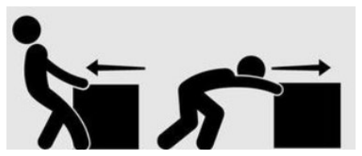
- To start something moving, a force is needed. An animal moves forward by pushing backwards on the ground with its feet; the ground then pushes forwards on its foot.
- A force is also needed to slow something down. The animal pushes forwards against the ground, and the ground pushes back on it.
- If there is no overall (net) force, the animal continues in its current state of motion: if stationary it stays still; if moving it keeps moving.
- A force can change the direction of motion. When a driver turns the steering wheel, friction between the tyres and road pushes the car sideways, making it turn.
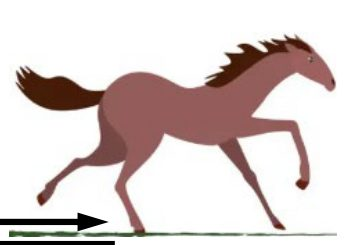
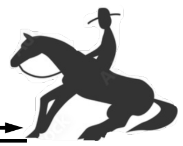
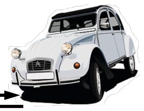
Contact and non-contact forces
Every force comes from one object and acts on another. Contact forces act between objects that are touching, including friction, drag, the normal force and tension.
Forces can also act without contact: gravity, magnetism and electrostatics are non-contact forces.
- Gravity is the attractive force between bodies due to their mass. It is weak, and only obvious when one mass is very large, such as the Earth or the Moon.
- Magnetic forces come from the magnetic properties of objects and can attract or repel, depending on the poles.
- Electrostatic forces come from electric charges and can attract or repel, depending on whether the charges are positive or negative.
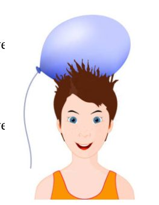
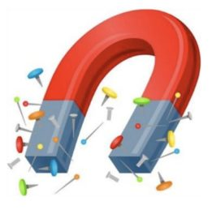
The newton (N)
Force is measured in newtons (N). (The unit is written in full with a lower-case "n", but its symbol is a capital N, because it is named after a person: Isaac Newton.) One newton is the force needed to accelerate 1 kg by 1 m/s2:
How big is 1 N? It is about the force of Earth's gravity on a 100 g mass, such as a large apple held in your hand.
Exercise 3.1
- An attractive force is a , whereas a repulsive force is a .
- A force may be described as a push, a or a .
- The Moon is attracted to the Earth by the force of .
- A magnet pulls a ball-bearing along a table with a force.
- A charged comb that lifts a person's hair is an example of an force.
3.2 The force diagram
Scientists and engineers analyse forces using force diagrams (free body diagrams), where each force is drawn as an arrow showing its size and direction. Because every force comes from one object and acts on another, each force is labelled Fon A by B. You don't need to draw the object: a dot is enough.
Match each situation with the forces acting on the object.
3.3 Mass, weight and measuring force
What is mass?
Mass is the amount of matter in a body. It is measured in kilograms (kg).
What is weight?
In everyday language, "weight" often means how much substance something has (e.g. the weight of a loaf of bread), or how heavy it feels. In science, weight means the force of gravity acting on an object.
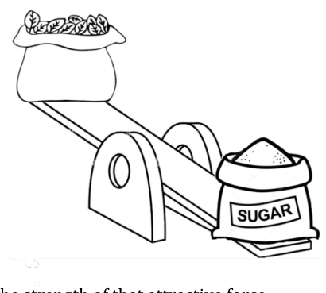
The strength of gravity depends on the masses involved, so an object's weight depends on where it is: on Earth, the Moon or Mars. The Moon's gravity is weaker because the Moon has less mass, so astronauts on the Moon could jump higher and lift large masses easily.
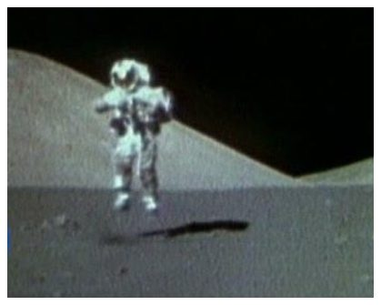
Earth's gravity pulls on a 1 kg mass with 9.8 N, so Earth's gravitational field strength is g = 9.8 N/kg (often approximated to 10 N/kg). On the Moon, gMoon = 1.6 N/kg, and on Mars, gMars = 3.7 N/kg.
Demonstration 3.1: Measuring mass with a triple-arm balance
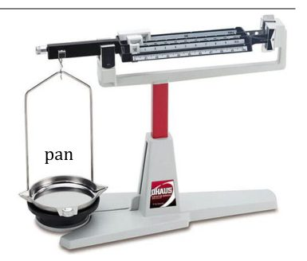
- Before placing the object in the pan, what must be done to the balance to make the measurement accurate? 2. Describe the principle used to find mass with a triple-arm balance. 4. If you took the objects and the balance to the Moon, would you get the same results? Explain.
- Check that it is on a flat surface and zero it (use the adjustment screw so the pointer lines up at zero with all riders at zero and the pan empty).
- It compares the unknown mass with known masses (the riders). Gravity pulls on both sides; when the beam balances, the masses are equal.
- Yes. The balance compares masses, and gravity on the Moon is weaker on both the object and the riders equally, so it still balances at the same reading.
Exercise 3.3
- A Year 10 student with a mass of 72 kg: N
- An exercise book with a mass of 180 g: N
- A 20-cent coin with a mass of 11.3 g: N
- 72 × 9.8 = 706 N. b. 0.180 kg × 9.8 = 1.76 N. c. 0.0113 kg × 9.8 = 0.111 N. Remember to convert grams to kilograms. (The booklet's answers use g ≈ 10 N/kg: 720 N, 1.8 N and 0.113 N.)
- The newton is the unit of .
- Is the force of gravity a push or a pull?
- An astronaut is floating in deep space, very far from any planet or star. He has a mass of 75 kg. His weight is N.
- The unit used to measure weight is the .
- The weight of an object is .
- The mass of an object is .
- The force of can act across space through a vacuum.
- Is there any gravity on the Moon?
The Moon's gravitational field strength is about one-sixth of Earth's: gMoon = 1.6 N/kg. A 72 kg astronaut weighs herself with her bathroom scales on the Moon, then flies to Mars (gMars = 3.7 N/kg).
- Her weight on the Moon is N.
- Her mass on Mars is kg.
- W = m × g = 72 × 1.6 = 115 N. b. Mass doesn't change with location, so it is still 72 kg.
Demonstration 3.2: Measuring weight with a spring balance
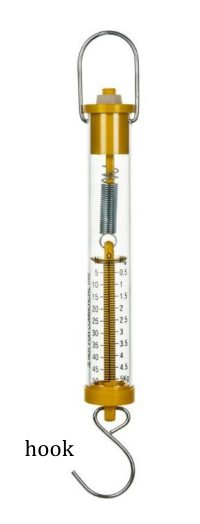
- Before hanging an object on the hook, what must be done to make the measurement accurate? 2. Describe the principle used to measure weight with a spring balance. 3. What do you notice about the scale, and what does it measure? 5. If you took the pencil case and spring balance to Mars, what would the balance measure, and how would the reading change?
- Zero it: hold it vertically and adjust it so it reads zero with nothing on the hook.
- The weight of the object stretches the spring. The extension is proportional to the force, so the scale converts the stretch into a force reading.
- The scale is marked in newtons (and may have a mass scale in grams calibrated for Earth's gravity). It measures force (weight).
- It still measures the weight (the force of gravity on the pencil case), but the reading would be smaller, about 3.7/9.8 ≈ 0.38 of the Earth reading, because Mars's gravity is weaker.
3.4 Net force
Practically every object on Earth has more than one force acting on it. A person sitting on a chair has at least two: the Earth's gravity pulling down, and the chair pushing up. These forces balance, so there is no net force.
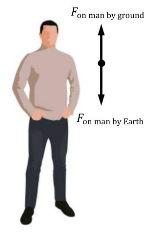
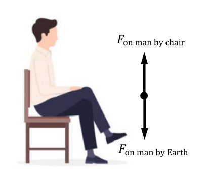
Exercise 3.4
Two girls push on a box from opposite sides, with forces of 196 N and 144 N. The net force on the box is N to the .
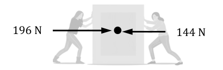
In a tug of war, one team pulls with 2540 N to the right and the other with 2600 N to the left. The net force on the rope is N to the .
Two tugboats pull a ship westward, each with a rope tension of 16 500 N. The drag force against the ship is 12 700 N. What is the net force on the ship (west)?
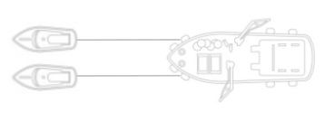
16 500 + 16 500 − 12 700 = 20 300 N west.
Determine the net force on the object.
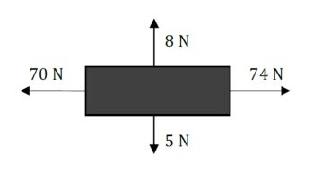
Vertical: N . Horizontal: N .
Draw and label all the significant forces on the lion sitting on its seat.
Two forces, equal in size: Fon lion by Earth (its weight) pointing down, and Fon lion by seat (the normal force) pointing up. They are balanced, so the net force is zero.
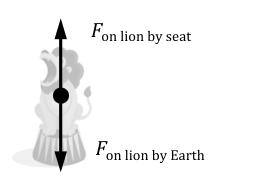
3.5 Newton's first law of motion
Hold up a piece of paper, then let it go. Describe its motion just after it is released. As it falls, does it keep accelerating, or does it travel at roughly constant velocity?
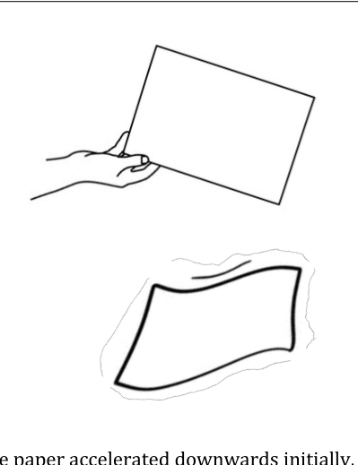
The paper accelerates downwards at first, because gravity pulls it. As its speed increases, air resistance increases too, acting upwards against its motion. Air resistance keeps increasing until it equals gravity. Then the net force is zero, so the paper stops accelerating and falls at a constant velocity.
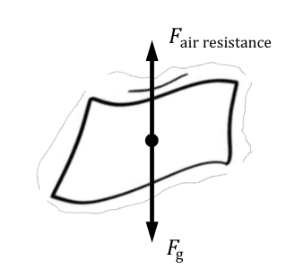
"Uniform motion" means travelling at a constant velocity in a straight line. A stationary object stays stationary (a constant velocity of zero). A net force is needed to make an object speed up, slow down or change direction. This applies to everything: planets, vehicles, animals and plants.
This tendency is called inertia, so Newton's first law is also called the law of inertia. Inertia is not a force: it is related to mass. The more massive an object, the more it resists changes to its motion.
Exercise 3.5
A parachutist is falling to Earth at constant velocity. What are the two significant forces acting on them? Describe the force diagram and any net force.
Fon parachutist by Earth (gravity/weight), pointing down, and Fon parachutist by straps (the drag from the parachute, transmitted by the straps), pointing up. They are equal in size, so the net force is zero, which is why the velocity is constant.
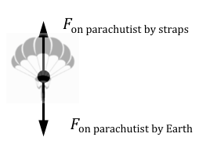
An asteroid moves through deep space at constant velocity. What is the size of the net force acting on it? Explain.
0 N. It is moving at constant velocity, and by Newton's first law an object only keeps moving at a constant velocity if the net force on it is zero.
A car travelling north brakes as it approaches an intersection. In which direction is the net force on the car acting?
The car is slowing down while moving north, so the net force (and acceleration) must point the opposite way: south.
A leopard is sleeping on a tree branch. What forces are acting on it? Are they balanced or unbalanced? Explain.
Fon leopard by Earth (its weight) pointing down, and Fon leopard by branch (the normal force) pointing up. They are balanced (equal and opposite), because the leopard is not accelerating: it stays at rest.
Demonstration 3.3: What happens in a vehicle collision?
Stack three 50 g slotted masses on each of two carts. Set up Cart 1 with its spring plunger facing backwards, and place Cart 2 about 50 cm in front of it. Gently push Cart 1 so it collides with Cart 2 without knocking the masses off beforehand. Watch both stacks of masses at the moment of collision. Repeat twice.
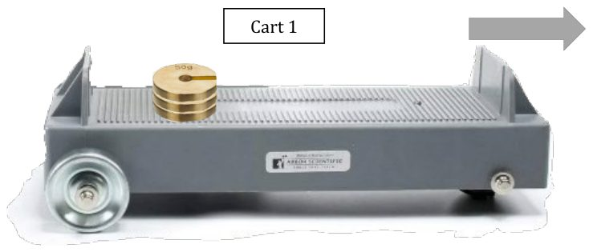
What happened to the masses on Cart 1 during the collision? Explain, including whether forces were acting on them.
The masses on Cart 1 kept moving forward (toppled forwards) when the cart suddenly stopped. Because of inertia, the masses continue moving unless a force acts on them. The cart was stopped by a force, but only friction acted on the masses, which wasn't enough to stop them with the cart.
What happened to the masses on Cart 2 during the collision? Explain.
Cart 2 was pushed forward suddenly, but the masses on it stayed behind (toppled backwards). Because of inertia, the stationary masses tend to stay at rest; only friction from the cart acted on them, which wasn't enough to accelerate them with the cart.
Imagine a moving car hits a car stopped at traffic lights. Describe what happens to the passengers in each car.
In the moving car, the passengers keep moving forward when the car suddenly stops (they are thrown towards the dashboard/windscreen unless held by seatbelts). In the stationary car, the car is pushed forward suddenly, so the passengers are thrown backwards relative to the car (into their seats, and their heads whip back).
What is the purpose of padded headrests in cars?
In a rear-end collision, the car is pushed forward and the passengers' heads tend to stay behind (inertia), whipping backwards. Headrests support the head so it moves with the body, reducing neck injuries such as whiplash.
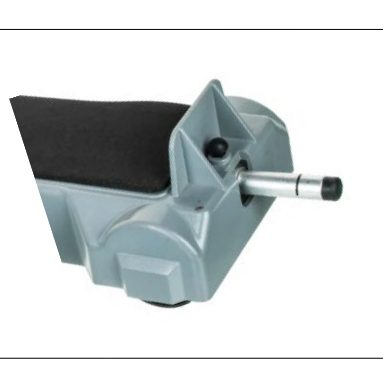
The demonstration is repeated with Cart 1's spring plunger facing forward. 5. What differences do you notice in how the masses move? 6. What features of modern cars do the same job as the plunger to reduce injury?
- The masses move less (they may not fall over). The spring makes the collision take longer, so the carts slow down and speed up more gradually and the forces on the masses are smaller.
- Crumple zones, airbags, seatbelts (which stretch slightly) and padded interiors all increase the time over which passengers stop, reducing the force on them.
Describe what often happens to passengers on buses and trams when they pull away from their stops, and when they slow down and stop.
When the bus or tram accelerates away, standing passengers lurch backwards (their bodies tend to stay at rest). When it slows down and stops, they lurch forwards (their bodies tend to keep moving). Both are due to inertia (Newton's first law).
3.6 More on types of forces
Normal force
If your weight is always acting, why don't you accelerate down through your chair? As you sit, you push down on the chair because of your weight. The chair pushes back up on you with an equal force. This is the normal force. It is always present when an object is in contact with a surface.
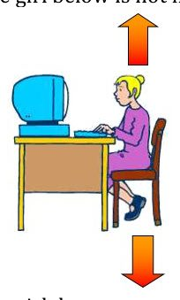
The girl isn't moving because these forces are balanced.
Tension
Tension is the force transmitted through a string, rope, cable or wire when it is pulled tight from both ends.
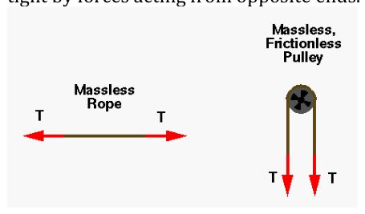
Friction
Friction is a force that occurs when two objects slide past each other. Every surface has tiny bumps; when two surfaces slide, the bumps collide, causing a force opposite to the direction of motion.
Static friction stops two touching surfaces from starting to slide. The maximum static friction force is:
where µs is the coefficient of static friction (a unitless number that depends on the materials) and N is the normal force.
| Materials | µs |
|---|---|
| Car tyre / asphalt (clean and dry) | 0.72 |
| Ice / ice at 0°C | 0.10 |
| Skin / metal (clean and dry) | 0.80 |
| Wood / wood (clean and dry) | 0.25 – 0.5 |
Dynamic friction opposes the motion of two surfaces that are already sliding:
| Materials | µd |
|---|---|
| Rubber / asphalt (clean and dry) | 0.5 – 0.8 |
| Rubber / wet concrete | 0.45 – 0.75 |
| Ice / ice at 0°C | 0.02 |
Static friction is always greater than dynamic friction (µs > µd). When surfaces are stationary, their microscopic bumps fit into each other, creating strong interlocking points, and high pressure at these points forms temporary adhesive bonds that must be overcome before movement starts.
Air resistance
Air resistance (drag) is a type of friction between a moving object and the air. Moving through air, you bump into millions of tiny air molecules; each collision exerts a tiny force, and together they push back against your motion. The drag equation is:
- Fd (drag force): the total air resistance, in N.
- ρ: the density of the air (kg/m3). Thicker air (at sea level) gives more resistance than thin air (on a mountain).
- v (velocity) in m/s. It is squared: double your speed and the air resistance quadruples.
- Cd (drag coefficient): how streamlined the object is (no units). A flat board has a high Cd; a sports car has a low one.
- A (area): the cross-sectional area facing the wind, in m2.
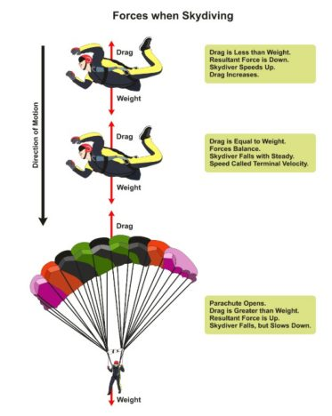
Exercise 3.6
A 20 kg wooden crate sits on a floor. µs = 0.4 and µd = 0.3.
- The normal force on the crate is N.
- The maximum static friction that must be overcome to move it is N.
- A student pushes the crate with a horizontal force of 50 N. Does it move? The actual friction force at that moment is N.
- N = mg = 20 × 9.8 = 196 N. b. 0.4 × 196 = 78.4 N. c. 50 N is less than 78.4 N, so it doesn't move; static friction matches the push exactly (50 N) to keep the forces balanced.
A 10 kg sled is pulled across ice with a horizontal force of 40 N. µd = 0.1.
- The dynamic friction force is N.
- The net force on the sled is N.
- F = µdN = 0.1 × 10 × 9.8 = 9.8 N. b. 40 − 9.8 = 30.2 N. (The booklet's answers of 1.1 N and 38.9 N don't match this calculation.)
Explain why it is generally harder to start a heavy box moving than to keep it moving once it is sliding. Refer to µs and µd.
When the box is stationary, the microscopic bumps on the two surfaces interlock and form temporary adhesive bonds. These must be overcome to start moving, so the coefficient of static friction is higher than the coefficient of dynamic friction (µs > µd). Once the box is sliding, the bumps can't settle into each other, so less force is needed to keep it moving.
A cyclist sprints at 10 m/s with a frontal area of 0.50 m2, air density 1.2 kg/m3 and drag coefficient 0.90. Calculate the force of air resistance.
Fd = ½ × 1.2 × 102 × 0.90 × 0.50 = 27 N.
A skydiver changes from a "belly-to-earth" position to a "head-first" dive. a. Which variable, A or Cd, changes the most? b. Does the terminal velocity increase or decrease? Explain using the equation.
- The area (A): in a head-first dive they tuck their limbs, greatly reducing the area hitting the oncoming air. Cd changes only a little.
- The terminal velocity increases. At terminal velocity the drag equals the weight, which stays the same. With a smaller A (and Cd), v must be larger to produce the same drag force: v = √(2F ÷ (ρCdA)), so decreasing the denominator increases v.
Prac 3: Descent time of a parachute
Aim: to investigate the effect of [hole diameter / number of shroud lines] on the descent time of a weighted parachute.
When an object falls through air, two main forces act on it: its weight pulling down and air resistance pushing up. A parachute increases the surface area, increasing drag and slowing the fall. Stability also matters: a parachute that wobbles may lose efficiency.
Materials: a Barbie doll (or similar figure), lightweight plastic sheeting, string, scissors and sticky tape, hole punch, stopwatch, measuring tape, a safe high drop location.
Method:
- Cut a circle of plastic (about 50 cm diameter) for the canopy.
- Attach 4–8 strings (about 40 cm each) evenly around the edge, using punched holes, and tie them to the doll.
- Do a test drop to check the parachute opens.
- Change the IV: either cut a hole in the centre (none, 2, 4, 6, 8 cm diameter) or change the number of shroud lines (4, 6, 8, 10, 12).
- Drop the doll from a fixed height (e.g. 3 m), timing from release until its feet touch the ground.
- Do 3 trials for each variation and calculate an average.
Identify the independent and dependent variables, and two controlled variables, for the hole-diameter version of this experiment.
IV: diameter of the hole in the canopy (cm). DV: descent time (s). Controlled variables (any two): the drop height (3 m); the canopy size and material; the number and length of shroud lines; the mass of the doll; dropping indoors with no wind.
Identify two sources of error, their type (random or systematic), and a realistic improvement for each.
Examples:
- Reaction time starting and stopping the stopwatch (random). Improvement: use a video and frame-by-frame timing, or a greater drop height so the time is longer.
- Draughts or air currents pushing the parachute sideways (random). Improvement: do the drops indoors away from doors and air conditioning.
- Releasing the parachute folded differently, so it opens at different times (random). Improvement: use the same folding and release technique each time.
- A stopwatch or tape measure that is consistently off, e.g. measuring the height from the wrong point (systematic). Improvement: check and calibrate equipment and mark the drop height clearly.
3.7 Newton's second law of motion
Newton's first law deals with situations where the net force is zero. Newton's second law deals with a non-zero net force. An unbalanced force changes the motion: it causes acceleration.
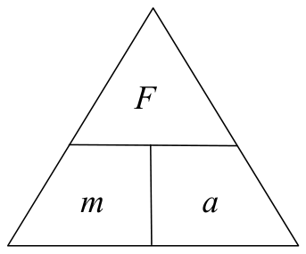
This matches everyday experience. The harder you kick a ball, the faster it accelerates. And for the same kick, a lighter ball accelerates faster than a heavier one.
Exercise 3.7
| Fnet acting on object (N) | Mass of object (kg) | Acceleration (m/s2) |
|---|---|---|
| 25 | 5.0 | 5.0 |
| 12 | 2.0 | 6.0 |
| 400 | 1000 | |
| 15 | 2.0 | |
| 8500 | 1.7 | |
| 12.5 | 0.38 |
A spaceship of mass 15 000 kg fires its rockets, and a net force of 200 000 N acts on it. Calculate its acceleration.
An 800 kg sports car accelerates from rest to 32 m/s in 3.8 s.
- Its average acceleration is m/s2.
- The net force applied to the car is N.
A 1500 kg rhinoceros can apply a braking force of 1600 N with its legs.
- Its acceleration while slowing down is m/s2 (a deceleration).
- The time it takes to stop from 18 m/s is s.
- a = F ÷ m = 1600 ÷ 1500 = 1.07 m/s2. b. t = Δv ÷ a = 18 ÷ 1.07 = 16.9 s.
A man pushes a 100 kg trolley with a force of 500 N. The friction force resisting the trolley is 75 N.
- The net force is N.
- The acceleration is m/s2.
- The velocity after 4 s, starting from rest, is m/s.
Prac 4: Verifying Newton's second law for a constant Fnet
Aim: to determine the relationship between a ball's acceleration and its mass for a constant net force.
Equipment: string, pendulum bob, retort stand, boss head and clamp, ruler, photogate, five metal balls of the same diameter but different masses.
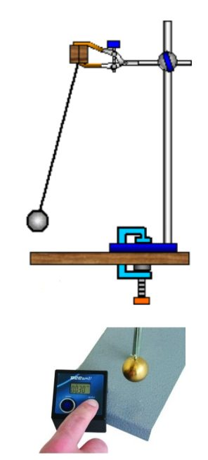
Procedure:
- Hang the pendulum bob from the clamp on a 50 cm string and find its natural swinging direction.
- Measure the mass of a ball and place it at the pendulum's lowest point.
- Line up the photogate so the struck ball passes through it.
- Pull the bob back about 15 cm along its arc and release it, so it strikes the ball with a consistent force. Record the ball's velocity.
- Repeat twice more, then repeat for every ball. Calculate 1/m for each mass.
Plot average velocity against mass, and average velocity against 1/m. 3. Assuming the velocity represents the acceleration, describe the relationship between acceleration and mass for a constant net force. 4. Describe the relationship between acceleration and 1/m, and explain how it verifies Newton's second law.
- As the mass increases, the acceleration decreases: the graph is a curve (inverse relationship). Heavier balls accelerate less for the same force.
- The graph of acceleration against 1/m is a straight line through the origin, so acceleration is directly proportional to 1/m (inversely proportional to mass). This verifies a = Fnet ÷ m: for a constant Fnet, a ∝ 1/m, and the gradient of the line equals the net force.
3.8 Newton's third law of motion
So far we have looked at the forces on one body, labelled Fon A by B. What happens to body B when it exerts a force on A? It also experiences a force from A, equal in size and opposite in direction.
A person sitting on a chair is pushed up by the chair, while the person pushes down on the chair. These two forces are equal in size and act on different bodies. They are sometimes called action–reaction pairs.
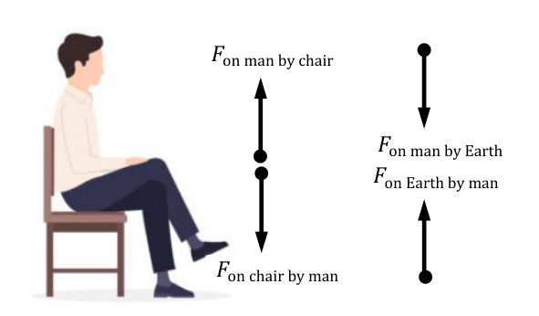
The person on the chair has another third-law pair: the mutual gravitational attraction between the person and the Earth. Neither of these really "acts" or "reacts"; the forces exist because the objects exist. This is why physicists avoid the words "action" and "reaction".
Although Fon man by Earth is equal and opposite to Fon Earth by man, the effect on the Earth is barely noticeable, because the Earth is so massive. It is just as accurate to say the Earth falls towards an object as that the object falls towards the Earth!
Demonstration 3.4: Newton's third law
Hook two spring balances together. Hold one while another person holds the other. Pull on balance A so that it reads 5 N.
When A reads 5 N, B reads N.
- When A reads 10 N, B reads N.
- When A reads 15 N, B reads N.
Describe how this demonstration supports Newton's third law.
The two balances always show the same reading, but they pull in opposite directions. The force on A by B is equal in size and opposite in direction to the force on B by A, exactly as Newton's third law says.
Retrieval activity 2: Mind map
A retrieval mind map forces your brain to pull information from long-term memory, which is one of the best ways to find your knowledge gaps.
Step 1 (15 minutes): write "Motion & Forces" in the middle of a blank A3 page. Add branches for the main sub-topics (e.g. graphing motion), then sub-branches for definitions, units and formulas (e.g. under Newton's second law: F = ma, measured in newtons). Don't look at your notes or laptop. If you get stuck, move to a different branch.
Step 2 (15 minutes): open your notes and use a different colour to add what you forgot, correct mistakes, and connect related ideas with dashed lines. The second-colour parts are your knowledge gaps: focus your revision on them.
Step 3 (10 minutes): share your map with a partner and add to it.
If 80% of your map is in the first colour, you have a strong grasp of the unit. If the second colour dominates a branch, that's your signal to ask for help or do extra practice on that topic.
Homework questions
You are standing on a bus stopped at a red light. When the light turns green, the bus accelerates forward and you feel "thrown" backward. Which of Newton's laws explains this, and what is the term for this resistance to change in motion?
Newton's first law. Your body tends to stay at rest while the bus accelerates forward underneath you. The resistance to a change in motion is called inertia.
You push an empty 15 kg shopping trolley with a force of 30 N. Later it is full, with a mass of 45 kg. If you push with the same 30 N, what happens to the acceleration? Use an equation to justify your answer.
Using a = F ÷ m: empty, a = 30 ÷ 15 = 2 m/s2; full, a = 30 ÷ 45 = 0.67 m/s2. Tripling the mass reduces the acceleration to one-third.
On a velocity–time graph, what does a horizontal line tell you about an object's acceleration? How is this different from a horizontal line on a distance–time graph?
On a velocity–time graph, a horizontal line means the velocity is constant, so the acceleration is zero (the object is moving at a steady speed). On a distance–time graph, a horizontal line means the distance isn't changing, so the object is stationary.
A Barbie doll has a mass of 200 g on Earth. What would its mass be on the Moon, where gravity is weaker? What would happen to its weight?
Its mass would still be 200 g: mass doesn't depend on location. Its weight would decrease, from about 0.2 × 9.8 = 1.96 N on Earth to 0.2 × 1.6 = 0.32 N on the Moon.
A swimmer pushes off the wall of a pool with a force of 100 N. According to Newton's third law, what is the size and direction of the force the wall exerts on the swimmer?
100 N, in the opposite direction: away from the wall, pushing the swimmer into the pool.
A car travelling at 20 m/s brakes and comes to a complete stop in 4 seconds. Calculate its acceleration.
a = (0 − 20) ÷ 4 = −5 m/s2.
In the parachute experiment, the Barbie eventually reaches a constant speed called terminal velocity. At that moment, what is the net force on it? Explain using gravity and air resistance.
The net force is zero. At terminal velocity the upward air resistance has increased until it is equal in size to the downward force of gravity (weight), so the forces are balanced and the doll stops accelerating (Newton's first law).